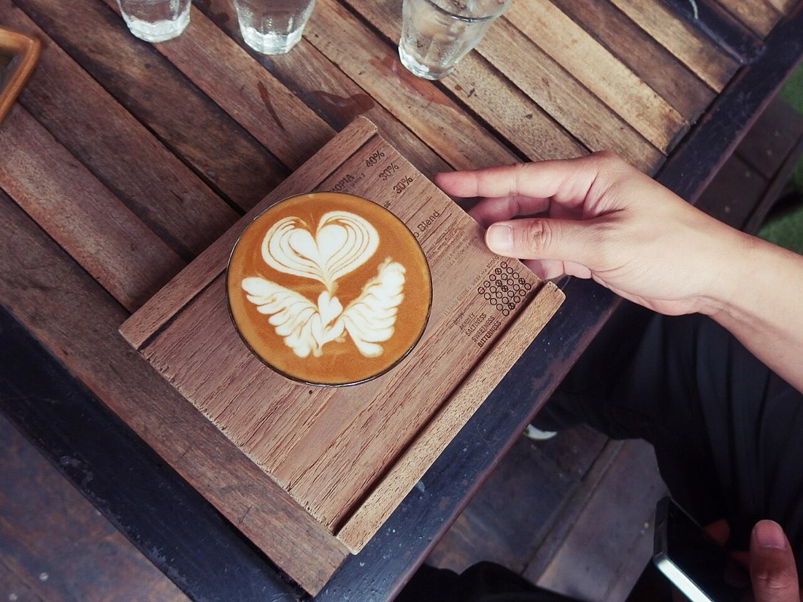

📷 Waranya Mooldee anyadiaryร้านอาหาร-ของกิน · Food & Eats (4,179)
— ผู้สนับสนุน · sponsor —Skip DJT — บินฟลอริดาให้ถูกลง เทียบสนามบินก่อนจอง · Skip DJT — fly Florida for less: compare the airports before you bookลงโฆษณาที่นี่ · advertise here
- รายการที่ข้อมูลครบ · most complete listings
- คูเมือง · the moat
- ประตู · แจ่ง · gate / corner
- อาหารไทย · Thai (1,608) — เช่น · e.g. เดอะการ์เด้น ร้านอาหารและเกสต์เฮาส์ · The Garden Restaurant & Guest House · 102/1 อาหารตามสั่ง · 102/1 Ahantamsang · 108 Cafe
- ตามสั่ง-ผัดกะเพรา · Made-to-order (9) — เช่น · e.g. 102/1 อาหารตามสั่ง · 102/1 Ahantamsang · ทิพ ทิพ อาหารตามสั่ง · Thip Thip Ahantamsang · ร้านกะเพราระเบิด · Ran Kaphrao Raboet
- ข้าวซอย-ก๋วยเตี๋ยว · Khao Soi & Noodles (32) — เช่น · e.g. AMM (Aung Myint Mo Kyay Oh) · Boss Ramen · Chinese noodle
- นานาชาติ · International (463) — เช่น · e.g. 8-inch Pizza · @suan dok gate chiangmai · AIKU bar & restaurant
- อาหารทะเล · Seafood (24) — เช่น · e.g. Garden Seafood · Laem Charoen Seafood · Lert Rot Seafood Restaurant
- มังสวิรัติ-เจ · Vegetarian & Vegan (35) — เช่น · e.g. Anchan · Aum Vegetarian Restaurant · Bun Song
- สตรีทฟู้ด-ฟาสต์ฟู้ด · Street Food & Fast Food (179) — เช่น · e.g. 4 soup · ไก่ย่างห้าดาว · 5 Star Chicken · 5 Star Chicken
- เบเกอรี่-ของหวาน · Bakery & Dessert (110) — เช่น · e.g. 100 Flavors: Chiang Mai Craft Ice Cream · 7 Senses Gelato · Anila Gelato
- บาร์-ผับ · Bars & Pubs (400) — เช่น · e.g. FUBAR · Soi Dog Blues Bar · 1
- กาแฟ-คาเฟ่ · Coffee & Cafés (1,305) — เช่น · e.g. "ะ" · The ITs · (วัน)ชัยโยเกิร์ตสดปั่น · (wan)Chai Yo Ke Tasot Pan · 12 Feb Homey Cafe
ยังไม่เข้าชั้นย่อย · Not yet on a sub-shelf (23)
- Berlin's Doner Kebab🐜3
- CNX Cigars🐜3
- China Kitchen🐜4
- Coco Restaurant & Homestay🐜2 รอปักหมุด · pin wanted
- Copacabana Rooftop CNX🐜2 รอปักหมุด · pin wanted
- Eat@Rincome🐜4
- Emotion Club🐜2 รอปักหมุด · pin wanted
- Gaj Kitchen and Bar🐜3 รอปักหมุด · pin wanted
- GooMan's CNX🐜2 รอปักหมุด · pin wanted
- Happy Allergy Bakery🐜2 รอปักหมุด · pin wanted
- La Friandise🐜3
- Moment's Notice Jazz Club🐜3 รอปักหมุด · pin wanted
- Nakhwan Cafe🐜2
- North Gate Spirit🐜2
- PuraVida🐜2
- RED CNX🐜2 รอปักหมุด · pin wanted
- Red Room 199🐜2 รอปักหมุด · pin wanted
- Sip at Ping🐜2 รอปักหมุด · pin wanted
- Skugga Vineyard🐜4 รอปักหมุด · pin wanted
- T Station🐜5
- The Globe🐜2
- Tiki Torch🐜2 รอปักหมุด · pin wanted
- Your Father Cafe🐜3 รอปักหมุด · pin wanted
📜 รายชื่อครบทั้งชั้น หน้าเดียว · The complete roll, one page (4,179) · ~4.6 MB
⬇ GeoJSON (4,161 จุด · points)
{kind=link}